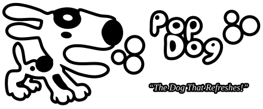
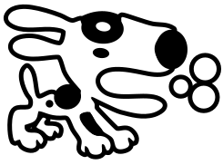
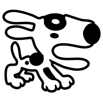

Pop Dog
Redibujo vectorial limpio del cartel de Pop Dog (la gaseosa ficticia del mapa de_train). Tres archivos: el logo completo, la marca (perro y burbujas) y un ícono cuadrado. El grosor del contorno es parejo, las burbujas son círculos exactos y las manchas son elipses.
Logo completo sobre distintos fondos

Marca (cabecera) y ícono, en los tamaños que se usan

